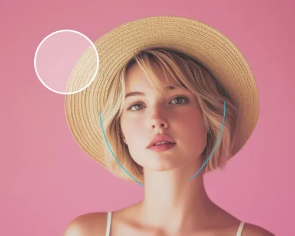
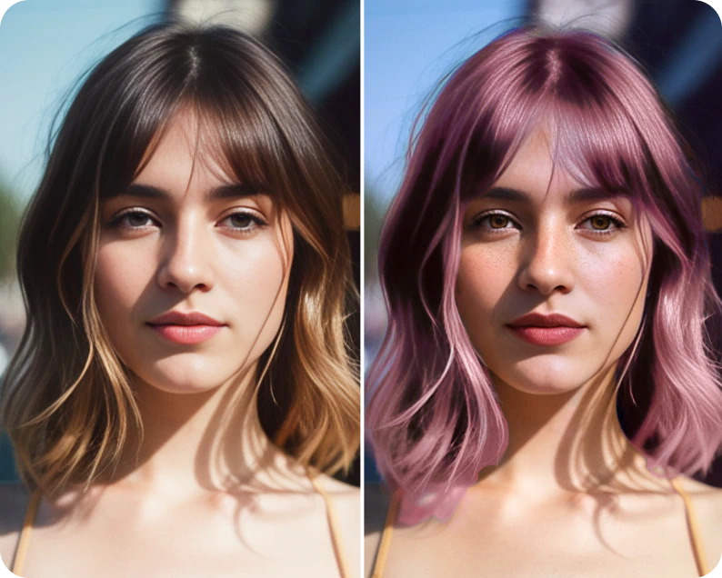

把 Facetune 嵌进人像内容周更链：拍照到出片少了七次手动切换
做自媒体人像内容的人都懂，旧流程要跨三四个应用来回倒腾。把 Facetune 放进修图主链路之后，从拍照到发布的七步手动操作被砍到两步，具体怎么接、哪几个环节最容易断链，我用三个月的周更实践说清楚。
我每周要出四到六组人像内容——不是商拍那种精度，是自己账号上的日常穿搭、探店随拍、偶尔接的朋友口播图。以前这套流程是：拍完 iPhone 原片 → Lightroom 调基础光影 → Snapseed 做局部修饰 → 打开另一个美妆 App 化个淡妆 → 导出到微信发给同事筛 → 选好的图再进 Canva 套模板 → 最终导出。算下来单次出片至少要打开四个不同应用，来回导三次图，同事那边筛完还要回我改。
这条链的崩溃点有两个：一是美妆那个环节，专门装的 App 功能全但启动慢，而且每次导出要等它压一轮画质；二是多个应用之间色彩空间不统一，Lightroom 里调好的肤色到了美妆 App 里变黄，还得重新拉一遍饱和度。一个月下来我算了算，每周花在"应用切换 + 重复调参"上的时间能多出三个小时。
后来干脆把这两个环节直接砍掉，整个修图链用一个工具接到底——就是 facetune官网 上这款人像精修工具，安装包从facetune下载拿。
新流程长这样： 拍完原片 → 进 Facetune → 依次走 Retouch（皮肤打底）→ Reshape（轮廓微调）→ Makeup（化淡妆）→ AI Hairstyle（选个合适的发型试试）→ 直接导出原画质 → 丢给同事筛 → 进 Canva 套模板。七步变五步，少了两次跨应用导出，而且色彩空间从头到尾一致，不会出现"这个 App 里的我和那个 App 里的我不是同一个人"的尴尬。
具体每一环怎么接，有几个容易断的地方我得说透。
皮肤打底和面部重塑的顺序不能乱
Facetune 自带的 Retouch 工具箱里有 Heal 和 Conceal 两个功能，很多人搞混。我的做法是：先用 Heal 点掉痘痘、痘印这些需要"直接变没"的瑕疵，再用 Conceal 从黑眼圈内侧向外渐变提亮，强度控制在 25% 到 35% 之间——太猛了会泛白，具体的参数建议去facetune文档翻一下，有现成的数值参考。这步搞定之后，再进 Reshape 调脸型。
为什么顺序不能反？因为 Reshape 动的是面部轮廓，如果先瘦脸再打遮瑕，黑眼圈的位置会跟着脸型一起挪，刚调好的渐变过渡就歪了。而且瘦脸的幅度我一般控制在 5% 以内——长按对比按钮是个好习惯，觉得"好像瘦了一点"就停，等到"一眼看出来瘦了"就过头了。多人合影的时候更要注意，每个人的瘦脸幅度统一，不要有的瘦有的没动。

美妆环节是整条链效率提升最大的地方
以前用专门的美妆 App，光选口红色号就要翻三屏。Facetune 的 Makeup 分组里有预设妆容套装，二十多套从纯欲到欧美都有，选一套直接整脸应用，然后把整体强度拉到 30% 到 40%——这个区间最自然，不会像贴了一层面具。
预设不够的时候再手动调。口红有几十种色号，腮红位置可以选苹果肌、颧骨或者鼻梁斜向，眼影支持双层叠加。我通常只在两种情况下手动化：一是要配特定穿搭的风格色，二是同事筛完之后说"这几张太浓了，能不能再淡一点"——这时候只需要单独把唇妆强度降个 10%，不用重跑整个流程。
这里有个衔接点要注意：如果你用了 Reshape 调过脸型，修容粉的位置要跟着新轮廓走，不要沿用瘦脸前的颧骨位置打阴影。腮红和 Glow 高光可以互相叠加，增加层次感。

哪些环节不该硬塞进来
我说这条链省了时间，但也不是什么都往里面塞。AI Hairstyle 我偶尔用，但 AI Bangs 那个刘海试戴功能我基本不放主流程里——它适合"想剪刘海但怕后悔"的决策场景，不是批量出片该走的路。还有 Vanish 去背景那个功能，试了两次发现对复杂背景的识别率不稳定，还不如直接用 Canva 的一键去背景来得快。
边界还有一个：多人合影的时候，每个人的参数要分别调，不能一张图套同样的瘦脸幅度和妆容强度。我上周偷懒把同一套预设应用到一组四人合照上，结果其中一个朋友本来就是鹅蛋脸，瘦完之后显得颧骨突出，最后还是逐张重调了一遍——这波反而多花了时间。
总结下来的真实账
跑了三个月之后，我专门记了一笔：每周出片的应用打开次数从平均 28 次降到 14 次，跨应用导出从 12 次降到 4 次，中间同事因为"肤色不一致"打回来重调的次数从每周两三次变成了零。省下来的时间我没去做别的，就是多拍了几组素材——以前周日下午是修图时间，现在周日下午能多去两个地方探店。
如果你的人像内容量和我差不多，周更四到六组，这套流程值得试。如果是商拍级别的精度要求更高，那 Lightroom 还是得留着调光影，但美妆和面部重塑这两个环节用 Facetune 直接接进去，至少能砍掉那个启动又慢、导出又卡的美妆 App。
这套资料我在 GitHub、Gitee 和 GitCode 上各存了一份，国内访问走 Gitee 或 GitCode 更顺手，有几个进阶参数我也一起存了。